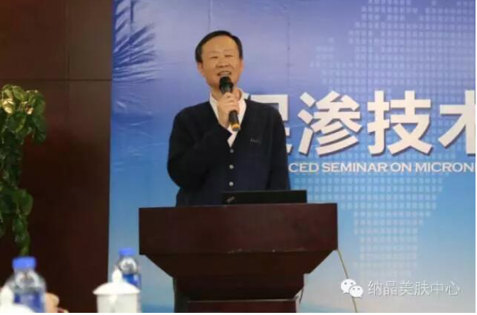
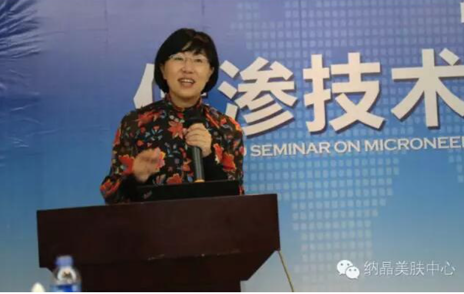
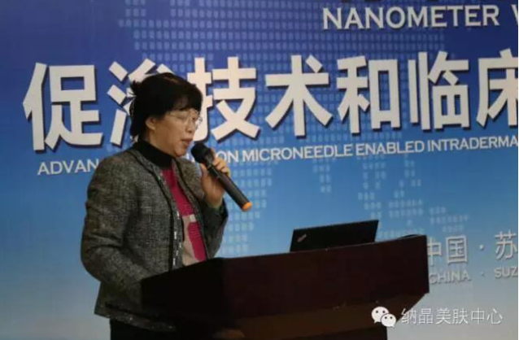

第二届纳米技术促渗技术和临床应用研讨会
2015年12月，首界《纳米晶片物理促渗技术及其应用产学研讨会》，世界中医药学会联合会经皮给药专业委员会召集药学、药理、药代、制剂等相关行业的专家和临床医生一起，在苏州召开了《纳米晶片物理促渗技术及其应用产学研讨论会》。
五位临床专家作了物理促渗的临床要求和纳米晶片的安全性功效性临床观察的主题报告。与会专家从各自专业角度分别对纳米晶片这一新型给药技术的临床应用、产业发展和推广等方面给出了非常有价值的意见和建议。
世界中医药联透皮给药专业委员主办的第二届“纳米晶片促渗技术和临床应用研讨会”在苏州展开。
40多位全国著名皮肤科相关专家相聚一堂，各自发表了对纳晶纳米晶片促渗及应用的见解，并在会议中进行了热烈地讨论，参议人员均表示受益匪浅。
全国著名皮肤科专家

世界中联经皮给药专业委员会会长-梁秉文

中国中医药信息研究会会长-吴刚

中国人民解放军空军总医院皮肤科医院院长-刘玮

中国医科大学附属第一医院皮肤科副主任-李远宏

江苏省人民医院皮肤科主任-骆丹